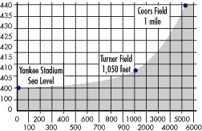

In 1999, Coors Field firmly founded itself as the most prolific offensive ballpark ever created. The Rockies and their opponents combined for 303 home runs, the most ever in a season at one venue, with one or more tenants. The average 1999 score was 8-7. And, like the park's previous seasons, no lead was safe. The Rockies on one occasion lost after relinquishing an eight-run lead. Two days later, they entered the bottom of the ninth down 12-5, but rallied for five runs and stranded the tying run on second.But while the experts are still debating whether the egg preceded the chicken, one thing is obvious: Offensive baseball came well before Coors Field. Even after the park's inception in 1995, American League teams have consistently compiled higher batting averages and more hits than the Rockies. And, Mark McGwire hit only one of his 70 home runs in Denver during his magical 1998 season. In the park's short lifetime, there's also been a no-hitter and 14 shutouts. Coors was only a small cog in baseball's shift to a hitter's game; it wasn't the catalyst. But the ball still travels 9 percent farther at 5,280 feet than at sea level. It is estimated that a home run hit 400 feet in sea-level Yankee Stadium would travel about 408 feet in Atlanta and as far as 440 feet in the Mile High City.  However, it's important to note that the wind can easily play a much greater role than altitude in turning fly balls into home runs. The same 400-foot shot, with a 10-mph wind at the hitter's back, can turn into a 430-foot blast. (A 10-mph wind is close to the average prevailing wind in the United States.) So, it's easy to see how a good tailwind can beat high altitude for home-run hitting any day. Another important effect of altitude on baseball is the influence thinner air has on pitching. In general, curve balls will be a little less snappy, and fastballs will get about an extra six inches of giddy-up due to the decrease in resistance the thinner air provides. So, fasten your shoulder harnesses, keep both hands on the bar in front you at all times, and enjoy the ride.